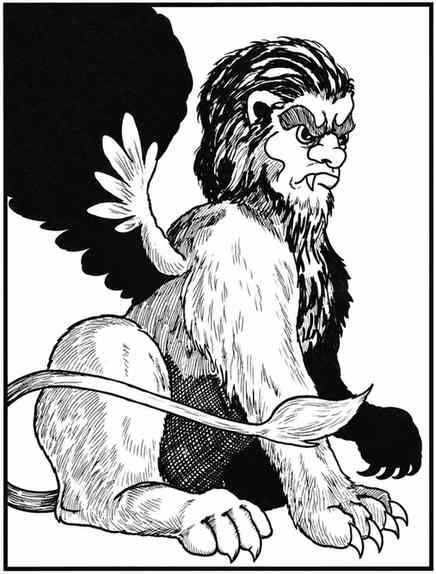

公狮身人面像 · Androsphinx
 |
|
公狮身人面像是力量强大、体型巨大的雄性狮身人面像，以两只巨掌近战攻击；它能像 6 级人类牧师一样施展牧师法术。它通常避开雌性狮身人面像，因为不满后者更高的智力和中立阵营。狮身人面像能说本族所有语言以及人类通用语。
公狮身人面像每天可咆哮 3 次，声音可传出数英里。第一次需被激怒，第二次需极度愤怒，第三次需陷入狂怒。第一次咆哮：36 寸内所有生物须进行恐惧豁免（如同魔杖），失败者惊慌逃跑 3 轮。第二次咆哮更响：20 寸内生物须进行石化豁免，否则因恐惧麻痹 1–4 个战斗轮；此外，距离其 3 寸内的生物会耳聋 2–12 个战斗轮，食人魔体型或更大的生物（或有保护听觉器官者）不受影响。第三次咆哮：24 寸内生物须进行魔法豁免，失败则力量降低 2–8 点，持续同样数量的战斗轮；其嘴部 3 寸半径内的生物会被掀翻，食人魔体型或更大的生物除外。被掀翻者还须进行龙息豁免，否则昏迷 2–12 个战斗轮；未被掀翻者受到 2–16 点伤害（狮子或半狮子除外）。第三次咆哮还会影响 3 寸内的石头，除非通过石化豁免，否则会被震裂。